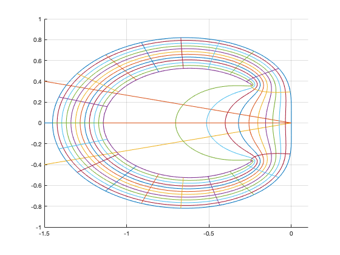
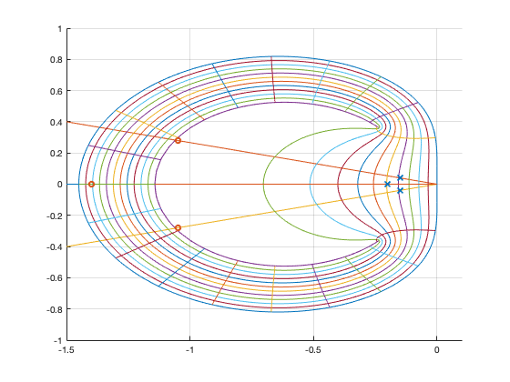
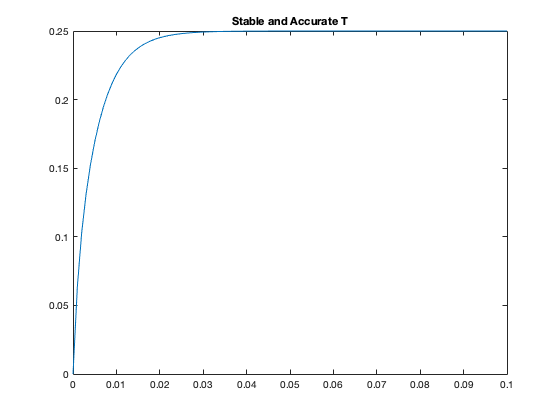
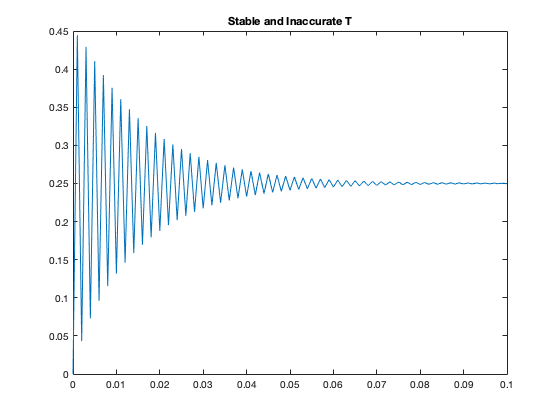
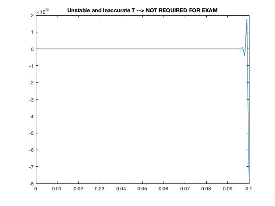

Contents
close; clc; close all;
A = [-4.7, -1.55, -0.55; 0.3, -2.75, -0.35; 1.1, 1.85, -2.55]
B = [1; 0; -1]
C = [2, 1, 1]
D = [0]
A =
-4.7000 -1.5500 -0.5500
0.3000 -2.7500 -0.3500
1.1000 1.8500 -2.5500
B =
1
0
-1
C =
2 1 1
D =
0
PART A
lamda = eig(A)
lamda =
-4.0000 + 0.0000i
-3.0000 + 0.8000i
-3.0000 - 0.8000i
PART B
Nt=21;
Nr=12;
theta=linspace(0,2*pi,1001);
rho=linspace(0.6192,1,1001);
tvec=linspace(0,2*pi,Nt);
rvec=linspace(0.6192,1,Nr);
T = linspace(0,1,1001);
hold on
plot(real(lamda(1)*T), imag(lamda(1)*T))
plot(real(lamda(2)*T), imag(lamda(2)*T))
plot(real(lamda(3)*T), imag(lamda(3)*T))
hold off
for k=1:length(rvec)
z=rvec(k)*exp(i*theta);
w=(z.^2-z.*1.45 + 0.45)./(z.*1.27-0.73);
hold on
plot(real(w), imag(w))
hold off
end
for k=1:length(tvec)-1
z=rho*exp(i*tvec(k));
w=(z.^2-z.*1.45 + 0.45)./(z.*1.27-0.73);
hold on
plot(real(w), imag(w))
hold off
end
grid on
axis([-1.5 0.1 -1 1])

PART C
stable_acc = 0.05;
stable_inacc = 0.35;
unstable = 1;
hold on
plot(real(stable_acc * lamda), imag(stable_acc * lamda), 'x')
plot(real(stable_inacc * lamda), imag(stable_inacc * lamda), 'o')
hold off
disp("Stable and accurate at T = " + stable_acc + " -> shown as 'x' on Figure 1");
disp("Stable and inaccurate at T = " + stable_inacc + " -> shown as 'o' on Figure 1");
disp("Unstable and inaccurate at T = " + unstable);
Stable and accurate at T = 0.05 -> shown as 'x' on Figure 1
Stable and inaccurate at T = 0.35 -> shown as 'o' on Figure 1
Unstable and inaccurate at T = 1

PART D
num = [0 1.27 -0.73];
den = [1 -1.45 0.45];
l1 = lamda * stable_acc
l2 = lamda * stable_inacc
l3 = lamda * unstable
stable_accurate_poles = roots(den - num*l1)
stable_inaccurate_poles = roots(den - num*l2)
unstable_inaccurate_poles = roots(den - num*l3)
l1 =
-0.2000 + 0.0000i
-0.1500 + 0.0400i
-0.1500 - 0.0400i
l2 =
-1.4000 + 0.0000i
-1.0500 + 0.2800i
-1.0500 - 0.2800i
l3 =
-4.0000 + 0.0000i
-3.0000 + 0.8000i
-3.0000 - 0.8000i
stable_accurate_poles =
0.8148 + 0.4616i
0.4392 - 0.2948i
stable_inaccurate_poles =
0.3145 + 1.1007i
0.0719 - 0.6052i
unstable_inaccurate_poles =
-0.1449 + 1.1381i
-0.1740 - 0.7222i
PART E
N = 10000;
t = linspace(0,10,N);
u = ones(1,N);
fx1 = zeros(1,N);
fx2 = zeros(1,N);
fx3 = zeros(1,N);
x1 = zeros(1,N);
x2 = zeros(1,N);
x3 = zeros(1,N);
y = zeros(1,N);
fx1(1) = -4.7*x1(1)-1.55*x2(1)-0.55*x3(1)+u(1);
fx2(1) = 0.3*x1(1)-2.75*x2(1)-0.35*x3(1);
fx3(1) = 1.1*x1(1)+1.85*x2(1)-2.55*x3(1)-u(1);
x1(2) = 1.45*x1(1) + stable_acc * (1.27*fx1(1));
x2(2) = 1.45*x2(1) + stable_acc * (1.27*fx2(1));
x3(2) = 1.45*x3(1) + stable_acc * (1.27*fx3(1));
y(1) = 0;
y(2) = 2*x1(2) + x2(2) + x3(2);
for k = 3:N
fx1(k-1) = -4.7*x1(k-1)-1.55*x2(k-1)-0.55*x3(k-1)+u(k-1);
fx2(k-1) = 0.3*x1(k-1)-2.75*x2(k-1)-0.35*x3(k-1);
fx3(k-1) = 1.1*x1(k-1)+1.85*x2(k-1)-2.55*x3(k-1)-u(k-1);
x1(k) = 1.45*x1(k-1) - 0.45*x1(k-2) + stable_acc * (1.27*fx1(k-1) - 0.73*fx1(k-2));
x2(k) = 1.45*x2(k-1) - 0.45*x2(k-2) + stable_acc * (1.27*fx2(k-1) - 0.73*fx2(k-2));
x3(k) = 1.45*x3(k-1) - 0.45*x3(k-2) + stable_acc * (1.27*fx3(k-1) - 0.73*fx3(k-2));
y(k) = 2*x1(k)+x2(k)+x3(k);
end
figure
plot(t,y)
xlim([0 0.1])
title('Stable and Accurate T')
N = 10000;
t = linspace(0,10,N);
u = ones(1,N);
fx1 = zeros(1,N);
fx2 = zeros(1,N);
fx3 = zeros(1,N);
x1 = zeros(1,N);
x2 = zeros(1,N);
x3 = zeros(1,N);
y = zeros(1,N);
fx1(1) = -4.7*x1(1)-1.55*x2(1)-0.55*x3(1)+u(1);
fx2(1) = 0.3*x1(1)-2.75*x2(1)-0.35*x3(1);
fx3(1) = 1.1*x1(1)+1.85*x2(1)-2.55*x3(1)-u(1);
x1(2) = 1.45*x1(1) + stable_inacc * (1.27*fx1(1));
x2(2) = 1.45*x2(1) + stable_inacc * (1.27*fx2(1));
x3(2) = 1.45*x3(1) + stable_inacc * (1.27*fx3(1));
y(1) = 0;
y(2) = 2*x1(2) + x2(2) + x3(2);
for k = 3:N
fx1(k-1) = -4.7*x1(k-1)-1.55*x2(k-1)-0.55*x3(k-1)+u(k-1);
fx2(k-1) = 0.3*x1(k-1)-2.75*x2(k-1)-0.35*x3(k-1);
fx3(k-1) = 1.1*x1(k-1)+1.85*x2(k-1)-2.55*x3(k-1)-u(k-1);
x1(k) = 1.45*x1(k-1) - 0.45*x1(k-2) + stable_inacc * (1.27*fx1(k-1) - 0.73*fx1(k-2));
x2(k) = 1.45*x2(k-1) - 0.45*x2(k-2) + stable_inacc * (1.27*fx2(k-1) - 0.73*fx2(k-2));
x3(k) = 1.45*x3(k-1) - 0.45*x3(k-2) + stable_inacc * (1.27*fx3(k-1) - 0.73*fx3(k-2));
y(k) = 2*x1(k)+x2(k)+x3(k);
end
figure
plot(t,y)
xlim([0 0.1])
title('Stable and Inaccurate T')
N = 10000;
t = linspace(0,10,N);
u = ones(1,N);
fx1 = zeros(1,N);
fx2 = zeros(1,N);
fx3 = zeros(1,N);
x1 = zeros(1,N);
x2 = zeros(1,N);
x3 = zeros(1,N);
y = zeros(1,N);
fx1(1) = -4.7*x1(1)-1.55*x2(1)-0.55*x3(1)+u(1);
fx2(1) = 0.3*x1(1)-2.75*x2(1)-0.35*x3(1);
fx3(1) = 1.1*x1(1)+1.85*x2(1)-2.55*x3(1)-u(1);
x1(2) = 1.45*x1(1) + unstable * (1.27*fx1(1));
x2(2) = 1.45*x2(1) + unstable * (1.27*fx2(1));
x3(2) = 1.45*x3(1) + unstable * (1.27*fx3(1));
y(1) = 0;
y(2) = 2*x1(2) + x2(2) + x3(2);
for k = 3:N
fx1(k-1) = -4.7*x1(k-1)-1.55*x2(k-1)-0.55*x3(k-1)+u(k-1);
fx2(k-1) = 0.3*x1(k-1)-2.75*x2(k-1)-0.35*x3(k-1);
fx3(k-1) = 1.1*x1(k-1)+1.85*x2(k-1)-2.55*x3(k-1)-u(k-1);
x1(k) = 1.45*x1(k-1) - 0.45*x1(k-2) + unstable * (1.27*fx1(k-1) - 0.73*fx1(k-2));
x2(k) = 1.45*x2(k-1) - 0.45*x2(k-2) + unstable * (1.27*fx2(k-1) - 0.73*fx2(k-2));
x3(k) = 1.45*x3(k-1) - 0.45*x3(k-2) + unstable * (1.27*fx3(k-1) - 0.73*fx3(k-2));
y(k) = 2*x1(k)+x2(k)+x3(k);
end
figure
plot(t,y)
xlim([0 0.1])
title('Unstable and Inaccurate T --> NOT REQUIRED FOR EXAM')
  